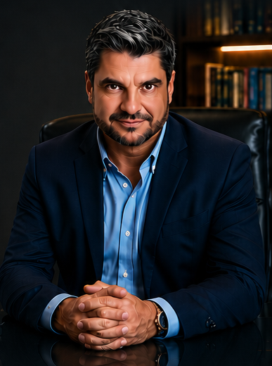

Atuação técnica, ética e independente a serviço da verdade e da justiça.
Graduação, especializações e formação técnica em perícia médica.
FAMERP — 1994.
Título pela ABORL-CCF.
Abordagem integrativa e funcional.
Nutrição celular e longevidade.
Formação técnica em perícia judicial.
Médico com sólida formação em Medicina Legal e atuação pautada na ciência, na imparcialidade e no compromisso com a Justiça. Atuação técnica voltada à adequada interpretação dos elementos médicos do processo, com rigor científico e clareza na análise dos fatos.
Compromisso técnico em cada uma das frentes de atuação médico-pericial.
Avaliações precisas e fundamentadas, com base científica e leitura criteriosa da documentação médica.
Rigor científico em cada laudo, com identificação adequada do nexo causal e dos elementos técnicos relevantes.
Compromisso com a imparcialidade e com a adequada compreensão dos fatos pelo Juízo.
Atuação técnica conduzida com integridade, independência e responsabilidade.
Atuação técnica abrangente em processos cíveis, criminais, trabalhistas e previdenciários, com elaboração de laudos, pareceres e suporte pericial especializado.
Nomeado em ações cíveis, criminais e trabalhistas.
Atuação como assistente técnico em causas judiciais, oferecendo suporte especializado a advogados e às partes.
Consultoria especializada para escritórios de advocacia e demandas médico-legais complexas.
Análise técnica criteriosa para correta caracterização do dano e do nexo de causalidade.
Perícias em clínica médica e em medicina do trabalho, com avaliação técnica detalhada.
Documentos técnicos claros, objetivos e tecnicamente fundamentados.
Postura independente, fundamentada em evidências científicas e em estrita observância às normas periciais.
Princípios que orientam cada análise técnica e cada parecer emitido.
Laudos claros, objetivos e fundamentados, com criterioso embasamento científico.
Formação constante para oferecer o que há de mais moderno na prática pericial e em Medicina Legal.
Compromisso absoluto com a verdade e com a Justiça, em qualquer cenário processual.
Atuação técnica com integridade e responsabilidade em todas as etapas do trabalho.
Vinculação a entidades de referência em Medicina Legal e Perícias Médicas, com atuação alinhada ao Código de Ética Médica e às normas periciais vigentes.
Associação Brasileira de Medicina Legal e Perícias Médicas
Conselho Regional de Medicina do Estado de São Paulo
Atuação conforme o Código de Ética Médica e as normas periciais vigentes